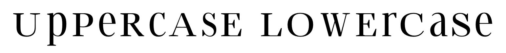

Glyphs
A collection of vector shapes,
each mapped to a unicode identifier
Glyphs, Leveled Up
Not just one shape per unicode point,
instructions for morphing the shape
along specified axes.
It depends…
CSS-standardized axes are weight, slant, italic, width, and optical size.
Font designers can create
any custom axis they want.
@font-face@font-face (Current)@font-face {
font-family: Normal Font;
src: url("/fonts/normal.woff2") format("woff2");
font-style: normal;
font-weight: 400;
font-display: swap;
}
@font-face (New)@font-face {
font-family: Variable Font;
src:
url("/fonts/variable.woff2") format("woff2 supports variations"),
url("/fonts/variable.woff2") format("woff2-variations");
font-style: oblique 0deg 10deg;
font-stretch: 50% 150%;
font-weight: 100 900;
font-display: swap;
}
font-family.text {
font-family: Normal Font, sans-serif;
}
@supports (font-variation-settings: normal) {
.text {
font-family: Variable Font, sans-serif;
}
}
font-variation-settings.text--bold {
font-weight: bold;
}
@supports (font-variation-settings: normal) {
.text--bold {
font-variation-settings: "wght" 680;
font-weight: 680;
}
}
.text--slanted {
font-style: italic;
}
@supports (font-variation-settings: normal) {
.text--slanted {
font-variation-settings: "slnt" 10;
font-style: oblique 10deg;
}
}
.text--italic {
font-style: italic;
}
@supports (font-variation-settings: normal) {
.text--italic {
font-variation-settings: "ital" 1;
}
}
.text--wide {
font-variation-settings: "wdth" 120;
font-stretch: 120%;
}
.text--display {
font-variation-settings: "opsz" 100;
font-optical-sizing: 100;
}
.text {
font-variation-settings:
"wght" var(--vf-wght, 400),
"slnt" var(--vf-slnt, 0),
"ital" var(--vf-ital, 0),
"wdth" var(--vf-wdth, 100),
"opsz" var(--vf-opsz, auto);
}
.text--heavy {
--vf-wght: 820;
}
.text--slanted {
--vf-slnt: -10;
}
.text--wide {
--vf-wdth: 150;
}
.text--bold {
font-weight: 700; /* Fallback for normal fonts */
font-weight: 625;
}
.text--slanted {
font-style: oblique 10deg;
}
.text--italic {
font-style: italic;
}
.text--wide {
font-stretch: 150%;
}
.text--display {
font-optical-sizing: 50;
}
.text--recursive {
font-variation-settings:
"wght" var(--vf-wght, 400),
"slnt" var(--vf-slnt, 0),
"CRSV" var(--vf-crsv, .5),
"MONO" var(--vf-mono, 0),
"CASL" var(--vf-casl, .6);
}
.text--amstelvar {
/* "flat capitals" - same height as lowercase x-height */
font-variation-settings:
"YTUC" 650, /* Reduce uppercase height */
"YTLC" 580; /* Increase lowercase x-height */
}

Supported in all modern browsers;
fallbacks for IE11 as necessary.
.text--bold {
font-weight: bold;
font-weight: 655;
}
.text--bold {
font-weight: bold;
font-variation-settings: "wght" 655;
}
@supports.text {
font-family: Normal Font, sans-serif;
}
@supports (font-variation-settings: normal) {
.text {
font-family: Variable Font, sans-serif;
}
}
@supports.text--italics {
font-style: italic;
}
@supports (font-variation-settings: normal) {
.text--italics {
font-style: oblique 10deg;
}
}
Use font-synthesis: none if browsers are creating faux bold/italic on your text.
Regular, Light, Bold,
Italic, Light Italic, Bold Italic
| Format | Requests |
|---|---|
| Static | 6 |
| Variable, Included Italic | 1 |
| Variable, Separate Italic | 2 |
WOFF2: Regular, Bold, Italic, Bold Italic
| Format | Files | Size (kb) |
|---|---|---|
| Static | 4 | 168 |
| Variable | 2 | 92 |
woff2pyftsubsetWOFF2: Regular, Bold, Italic, Bold Italic
| Format | Files | Size (kb) |
|---|---|---|
| Static (Full) | 4 | 168 |
| Variable (Full) | 2 | 92 |
| Static (EN) | 4 | 46 |
| Variable (EN) | 2 | 26 |
pip install fonttools
pip install Brotli
npm i -g glyphhanger
glyphhanger --subset=*.ttf --US_ASCII --formats=woff2
pyftsubset iAWriterQuattroV.ttf \
--glyphs="*" \
--layout-features="*" \
--flavor=woff2
jdsteinbach